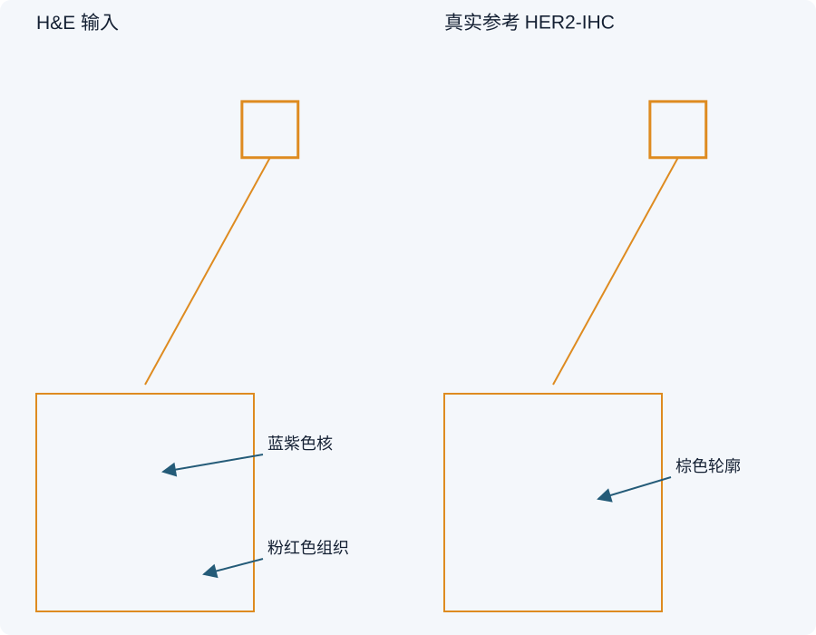

病理图像与配对
H&E 染色显示组织形态，IHC 通过特定标记呈现目标蛋白的分布。同一组织的两种染色能够提供不同信息；配对图像中的细胞位置和组织结构，是理解图像翻译任务的具体参照。

00005_train_3+.png，两图均为 1024×1024。橙框取同一坐标区域：x=704、y=192、宽高 192；放大仅用于观察，未改颜色。蓝紫色核、粉红色组织和棕色轮廓是可见外观指示，未提供细胞分割标注。来源：BCI 作者数据，依其许可用于非商业教学与科研；相邻切片仍可能存在局部形态差异。组织、切片与图块
一个图块只覆盖切片的一小片区域；一张切片来自某次取材，同一患者又可能提供多个组织样本。图块、切片、组织样本和患者属于不同层级。 组织由细胞及其周围成分组成。细胞核、细胞质、细胞之间的排列和周围间质，都可能在病理图像中留下可见结构。组织经过固定、制片、染色等处理后，可以在显微镜下观察，也可以用数字扫描设备保存为图像。
数字全切片图像常写作 WSI，即 whole-slide image。它覆盖一张切片中的较大组织范围，尺寸通常远大于模型一次能够处理的输入。研究者因此将它切成较小的图块，英文是 patch。模型看到的一个 256×256 图块，只是原切片中的一个局部。
一个患者可能有多个组织块和多张切片，一张切片又能产生许多图块。因此，患者数、切片数和图块数需要分别记录。例如，增加同一张切片中的裁剪位置会增加图块数量，却不会增加独立患者。理解这些层级，才能判断训练和测试是否真正使用了不同来源的样本。

H&E 的形态信息
上图左侧可见蓝紫色的核与周围粉红色组织。H&E 是苏木精—伊红染色，英文为 hematoxylin and eosin staining：苏木精相关染色使细胞核等结构常呈蓝紫色，伊红使许多细胞质和间质成分呈粉红色。组织、染色与扫描条件会影响颜色深浅。
在放大局部中，“蓝紫色核较密集”“中央粉红色组织较宽”描述了能直接找到的外观。海报的图注可以采用这样的具体位置和颜色说明，再解释两种染色提供的信息。
图像分辨率会改变能观察到的细节。把较大的组织图块整体缩小，保留了原来的覆盖范围，但细胞边缘可能变得模糊；直接裁出小窗口，则改变了观察范围。处理数据时应同时记录原始尺寸、模型输入尺寸和采用的缩放或裁剪方式。
IHC、HER2 与显色
另一种染色中，部分位置会出现棕色。我们需要知道它检测的对象，以及显色位置与组织的关系，才能理解模型正在尝试预测什么。 免疫组织化学简称 IHC，英文为 immunohistochemistry。它利用抗体识别组织中的特定抗原，再通过检测系统把相关位置转化为可观察的信号。抗原常是研究关注的蛋白。选择不同抗体和检测目标，就会得到不同含义的 IHC 图像。
本项目的目标是 HER2-IHC。HER2 是人表皮生长因子受体 2，是一种与细胞生长信号有关的受体蛋白。常见明场 IHC 中，DAB 显色呈棕色，苏木精复染提供蓝色或蓝紫色的核背景。HER2、DAB 和 RGB 分别指目标蛋白、显色体系及数字图像的颜色表示，阅读论文时要分清这三个层面。
棕色出现在哪里、强度如何、是否与相应组织结构对应，都值得观察。HER2 的病理评价涉及细胞膜染色等信息，单纯统计所有棕色像素的数量只能描述一种图像现象。后面的图像指标用于评价预测与参考的相似程度，不能直接换算成 HER2 临床分级。
同一坐标局部中，两栏的颜色与轮廓并不完全相同。这个代码项目给出的目标是参考 IHC 的 RGB 颜色值；模型不会直接输出蛋白含量或疾病诊断。HER2 提供生物学背景，当前训练和评价比较的是两张数字图像。
配对、配准与参考图
编号相同的两张图中，同一空隙与组织边缘提供了空间对应的线索。若它们的位置有偏移，文件虽然配成一对，逐像素计算仍会受到错位影响。 配对表示两张图被组织成对应的输入和目标。配准表示通过空间变换，使两张图中的组织结构尽量对齐。两个文件名相同可以帮助配对，但不能证明组织位置已经对齐。旋转、尺度差异、局部拉伸、组织折叠和缺失，都可能影响空间对应关系。

例如，H&E 的空隙在中央，参考 IHC 的对应空隙略偏右；即使预测的形状合理，逐像素误差仍会增大。项目图像检查格提供同坐标局部，观察到的偏移可以直接写入海报的结果解释。
真实 IHC 来自实验染色与成像，是训练和评价的参考；生成 IHC 来自模型计算。图片标题统一写清“H&E 输入”“真实参考 HER2-IHC”“生成 HER2-IHC”，报告和海报沿用相同名称。观察到一张图“颜色像 IHC”以后，还需要检查信号是否出现在参考中的相应位置。
同一切片的重复处理和相邻切片的对应关系不同。数据说明中怎样描述采集与配准，就怎样记录，不能仅凭“配对数据”四个字推断两张图在每个细胞位置上完全一致。
BCI 数据与样本划分
代码项目已附完整 BCI 配对数据。Notebook 沿用提供的数据包中的训练与测试目录，在训练目录内用固定种子划出 20% 图块作验证；运行后显示各集合数量，并自动保存 pairs.csv。当前清单核实的是图块编号与文件对应，不能据此推断患者互不重叠。
BCI 原文说明了组织采集、两种染色的配准与图块制作。本次直接使用提供的原始配对图块，不要求重新采集患者、染色或配准。数据集论文与使用许可说明数据来源和用途。
需要在电脑上另行取得数据时
项目 Kaggle 已附配对数据。需要核对原始来源时，打开 BCI 官方仓库，按 download_dataset.md 中的链接取得配对图像，并阅读 BCI 使用许可。解压后先浏览官方训练和测试目录，定位同编号的 H&E 与 IHC；若某一下载格式将两图左右拼接，先依据作者说明确认哪一侧为 H&E，再记录拆分方法。下载说明、论文和实际文件组织应逐项核对，不凭目录名推断患者信息。
另建数据集时的患者与切片分组
训练集用于调整参数，验证集用于选择模型设置和权重，测试集用于最终评价。先保留官方训练和测试来源记录，再核对各图块的患者或切片标识。有可靠患者标识时按患者分组；只有可靠切片标识时按切片分组。划分训练、验证和测试集时，同一组的全部图块放入同一个集合，并保存分组清单。来源未给出患者或切片对应关系时，沿用官方训练与测试划分，在官方训练部分固定划出验证集，并记录目前只能核实图块层级的划分；患者编号须有来源说明支持。
项目读取格自动检查两侧文件名一一对应、原图尺寸相同；可视化格显示同编号的输入与参考。编号一致只能证明文件配成一对，图中同一组织位置是否对应仍要通过可见边缘与空隙观察。保存的 pairs.csv 供后续实验直接共用，无需另抄一份清单。
练习开头显示真实原始配对，结尾可改裁剪坐标观察局部；中间的翻转和分组算例明确采用人工数据。真实项目自动保存文件清单与划分。
文献检索与阅读
关于染色转换的论文会交代使用了哪些组织图像、怎样配对、如何评价预测。相似的标题可能对应不同数据与实验设计，检索得到的文献需要结合图表和方法部分阅读。
检索问题与关键词
H&E、HER2-IHC 和图像翻译分别对应输入、目标与方法，也可以组成文献检索词。本项目的输入词包括 H&E、hematoxylin and eosin；目标词包括 HER2、ERBB2、immunohistochemistry；方法词包括 virtual staining、image-to-image translation、deep learning。不同文章可能使用不同术语，保留同义词能减少漏检。
打开 PubMed，在搜索框中先输入 "virtual staining" AND HER2。浏览标题和摘要，确认结果研究的是哪一种输入及目标。需要扩大范围时，可以尝试 hematoxylin AND immunohistochemistry AND "deep learning"；需要把检索限制在题名和摘要时，可以使用 "virtual staining"[Title/Abstract] AND (HER2[Title/Abstract] OR ERBB2[Title/Abstract])。每次修改只调整一项条件，并记录它怎样改变了结果。
在 Google Scholar 中，可以搜索 "virtual staining" HER2，也可以使用论文完整题名定位原始文章。找到 BCI 后，再搜索 "Breast Cancer Immunohistochemical Image Generation through Pyramid Pix2pix"，核对题名、作者和发表信息。使用“被引用”查看后续研究，使用论文参考文献寻找较早的方法与数据来源。检索平台给出的排序只帮助寻找文章，具体结论需要阅读全文确认。
搜索结果主要是“未染色组织生成 H&E”时，加上 HER2 或 immunohistochemistry 更容易找到本次目标。选中的文献用于海报里的具体说明，保留题名与原文出处即可；本项目不另交搜索日志或阅读记录。
论文类型与阅读顺序
检索结果里会同时出现综述、数据集文章和方法论文。当前要核对数据来源时，优先读数据集说明；想理解模型结构时，再读对应方法原文。 综述适合了解常见任务和方法；数据集论文重点解释数据怎样取得、组织和划分；原创方法论文说明模型及验证实验；软件文档用于核对具体实现。预印本和正式发表版本可能存在差异，保存时记录版本和日期。
本章先读 BCI 数据集与方法文章，弄清任务、配对数据和主要实验。再读 U-Net 的结构说明，联系已经做过的分割项目理解编码器、解码器和跳跃连接。希望继续学习对抗训练时，再读 pix2pix，即 Image-to-Image Translation with Conditional Adversarial Networks，重点辨认输入、生成器、判别器和损失之间的关系。
BCI 原文图 4画出了取材、配准与切图的过程，可用来理解本次图块怎样产生；第 3 节解释数据，第 5 节比较生成结果。本次使用小型 U-Net 与颜色误差训练，并未复现原文的 Pyramid Pix2pix。理解当前数据和输出后，原文模型及对抗训练可作为进一步阅读。
阅读一张结果图时，图注说明各栏分别来自什么方法，方法部分说明使用什么数据，结果部分说明比较什么指标。这三处共同支持“在哪项比较中更好”。海报采用这项结论时，保留原文方法、条件和图表编号。
论文中的证据
论文中的“平均误差更低”需要知道比较的是哪两个方法、哪组数据和哪种误差。结果表支持平均值的判断；想说明每张图都改善，还需要逐图结果。海报引用一项结论时，把这些具体条件放进那句话及图注中。
读 BCI 原文时，选一个结果图或结果表，写下它比较了哪两种方法、使用什么样本，以及图中实际观察到了什么。记下题名和图表编号，后面在海报中引用时就能找到依据。

“表中方法 A 的 MAE 较低”描述原文结果；“可能与配准有关”属于原因推测，需要进一步证据。引用时保留这个区别，图块数、患者数和切片数也沿用原文单位。
先读 BCI 数据与方法文章，找到一处能够解释配对数据或实验结果的图表。理解自己所用模型后，可再查阅 U-Net 或相关图像翻译方法的原文。
例如，一篇文章在结果表中报告模型 B 的平均误差低于 A，阅读记录就应同时保存表号、所用测试样本和误差计算方式。“平均误差更低”是表格支持的判断；“每张图都更好”还需要逐图结果，“能准确判断蛋白分级”则需要相应分级实验。
文献管理与写作
Zotero 条目与引用
写海报时，解释两种染色的句子需要出处。Zotero 保存文献题录与 PDF，并能在 Word 中插入引用。把实际要用的 BCI 原文及相关论文存入同一集合，核对题名、作者、年份和 DOI，便于随时回到原文。
在 Zotero 左侧文库中新建集合，命名为“H&E–IHC 学习”。安装浏览器连接器后，在论文页面点击保存按钮；也可以点击 Zotero 工具栏中的“通过标识符添加条目”，输入 DOI、PMID 等标识。直接拖入 PDF 时，要检查它是否已经关联到完整题录条目。
选中条目核对题名、作者、年份与 DOI；确认 PDF 附在对应条目下。正式会议论文与预印本采用各自实际发表信息。仅保存要用的文章与附件，不要求另建标签体系或单独的学习笔记。
发现同一篇文章出现两次时，先比较 DOI、题名和版本，再在“重复条目”中合并。保留正式发表信息时，也要确认已有笔记和附件没有遗漏。将论文中的关键段落高亮，并在批注里补上自己的解释，比保存很多未读 PDF 更便于查找。
在 Word 中把光标放到需要引用的句子后，通过 Zotero 选项卡的 Add/Edit Citation 插入引文。在文末使用 Add/Edit Bibliography 生成参考文献表；增加、删除或调整正文引用后，使用 Refresh 更新。最后逐条检查引文是否对应支持这句话的原文，核对参考文献表中的题名与作者信息。编号格式由软件处理，内容对应关系仍需要阅读确认。
海报背景与文献引用
海报背景用一个短段落说明 H&E 与 HER2-IHC 分别提供什么信息，以及为何研究配对图像预测；再用一句话说明本次以什么模型和数据比较什么问题。两三篇直接支持这些事实的文献就能提供出处。背景写入最终海报，不另交背景报告。
为学习海报选择一对有来源的 H&E/IHC 图像，在图注中写明染色类型、配对编号和来源。引用论文中的具体图表时，写清那张图表支持哪一句说明。